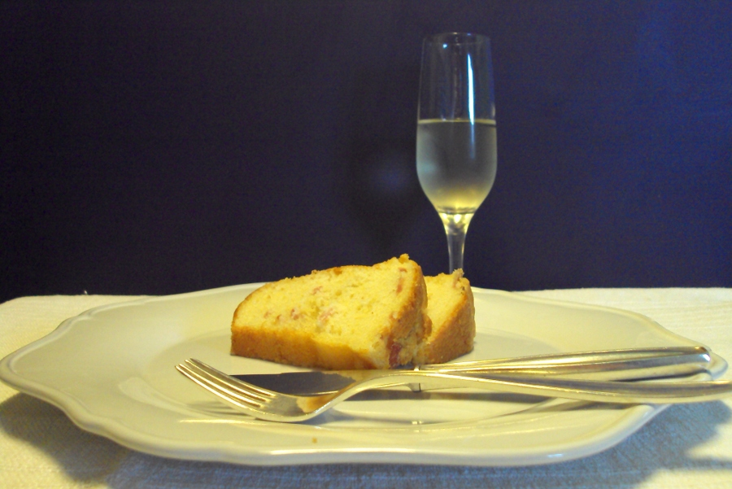

KUGELHOPF SALADO
Ingredientes
- 200 g de harina de fuerza
- 2 g de sal
- 3 cuch de azúcar
- 12 g de levadura
- 80-90 ml de leche entera
- 3 huevos camperos u orgánicos
- 75 g de bacon en trozos, frito y frío
- 50-100 g de mantequilla muy blanda, no fundida

Este pastel o bollo es clásico tanto de Alsacia, una región francesa que se asoma al Rin, como de la otra orilla del río, que ya es Alemania y se llama Elsass. En realidad toda esta área del valle alto del Rin ha sido motivo de disputa desde hace miles de años entre los reinos asentados en un lado y otro del río y perteneció alternativamente a Francia y a Alemania en los últimos 250 años.Por cierto, Nestor Luján cuenta en «Carnet de Ruta» que Guillermo II quiso contratar a Escoffier después de haber degustado sus platos deliciosos en un almuerzo en Londres. Le ofreció carta blanca para pedirle lo que quisiera para ir a trabajar en su corte. Escoffier le contestó que no creía que pudiera satisfacer sus demandas: «La devolución a Francia de la Lorena y la Alsacia».
La región occidental de la orilla del Rin, junto a Lorena, quedó anexionada a Francia por última vez en 1918, tras la I Guerra Mundial, con su capital en Strasburgo. Su gastronomía se parece mucho en ambas riberas, como es natural.
Los franceses no conciben el Kugelhopf en otra presentación que la dulce. En Alemania, sin embargo, se permiten algunas variaciones, a las que añaden Speck, algo parecido al bacon, en las que está basada esta receta, deliciosa para un brunch, un aperitivo refinado o una cena de picar. En ambas orillas del Rin se cuece en moldes con dibujos ya clásicos, como el de la imagen, antes de porcelana y ahora de metal.
En su variedad dulce saltó al otro lado del Atlántico a mediados del siglo XX y se asentó en los Estados Unidos, en donde en ocasiones, cada vez más comunes, se convierte en un bizcocho y ha perdido su masa panadera. Es un dulce nacional desde los años 60, porque una ama de casa ganó un concurso de pastelería con su bizcocho cocido en un molde de Kugelhopf de una fábrica que quería promocionar sus productos. Allí se cuece en moldes con dibujos increíbles que ya son famosos fuera de las fronteras del país, gracias a esa fábrica del concurso, la de Nordic Ware cuyos dueños, de origen nórdico, son de lo más imaginativo.
En un cuenco grande preparar una masa levadura con 2 cucharadas de harina, 1/2 de azúcar, 4 cucharadas de leche y la levadura desmenuzada. Batir un poco y dejar levar al doble. Añadir entonces los huevos a temperatura ambiente, la leche templada, el resto del azúcar y toda la harina restante revuelta con la sal. Batir la masa con la espátula durante unos minutos. Añadir entonces a la masa la mantequilla y el bacon y seguir batiendo hasta que se integre por completo. Cubrir el cuenco con un paño y esperar a que suba al doble.
Encender el horno a 175º C con la función ventilador o a 225 arriba y abajo.
Romper la masa batiéndola de nuevo con la espátula. Introducirla en el molde de 18-20 cm de diámetro exterior en la boca, bien engrasado con mantequilla, y no llenar hasta más de la mitad de la altura. Como suele sobrar, llenar dos moldes individuales, como en la imagen. Cubrir con un paño y esperar a que suba al doble.


Hornear durante 30 minutos en el horno con función ventilador a 175º. Si se va a hornear en un horno encendido arriba y abajo situar el termostato a 225º C y cuando esté caliente, introducir el molde en el horno, cerrar, bajar el termostato a 165º C y no volver a abrir el horno hasta pasados los primeros 20-25 minutos. De este modo se cuecen las masas muy bien y no se queman. Si a pesar de todo se enciende la resistencia superior, colocar un papel de aluminio sobre el kugelhopf para que no se queme.
Desmoldar nada más sacar del horno y dejar enfriar en rejilla.

NOTA: Si no se va a preparar con bacon o Speck, añadir hasta 4-5 g de sal a la masa, para que no quede sosa. La de la receta está calculada pensando en la sal del bacon o el Speck, bastante salados.